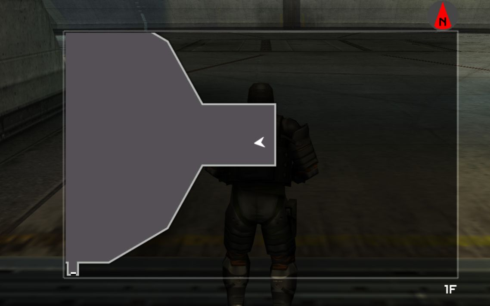
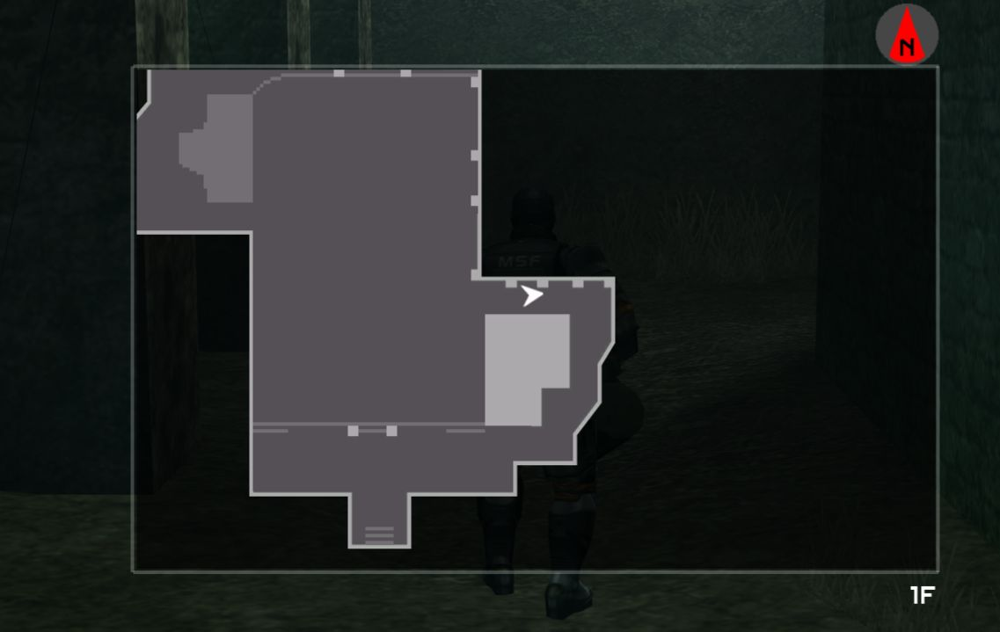
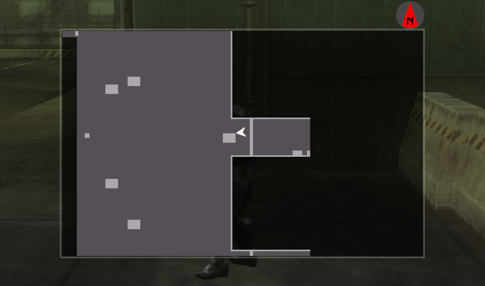

AI Guide
Back to Database
This is a guide for defeating all of the AI bosses (Pupa, Chrysalis, Cocoon, Peace Walker), ZEKE, and a guide on getting parts / AI boards for ZEKE. For a guide on defeating the mech bosses, click here.
Table of Contents
General Combat Tips
- If you have a health recovery item equipped when taking damage that should be lethal, the item will automatically be used and you won't die. Unequipping your healing items (or running out of them) leaves you vulnerable.
- Supply Markers are a must. Once you unlock Throwable supply markers, develop them immediately; they are much faster to use. Supply guns aren't worth it since it takes up a whole weapon slot.
- The faster you move, the easier it is to dodge attacks. Therefore, only take weapons that you are going to use, to reduce your weight. The Battle Dress weighs you down, but the extra defense makes using it worth it.
- Items have no weight, so you can take as many as you like. Even so, you should organise your inventory so that the most important items are closer together, which is really useful when you need to switch between items quickly.
- Take cover (where you can) when reloading. Cover is also useful for hiding behind when bosses use attacks that are very hard to dodge.
- Once you get the Infinity Bandana, getting an S rank on any of the boss fights becomes a lot easier. Recovery items and the bandana can't be equipped at the same time, so you should be mindful of your health when using it.
- If a teammate goes down, save them as soon as possible, but don't rush in to save them if it's not safe to do so or you're also low on health. Equip the Rescue Box and press the action button while near a downed teammate to instantly revive them, or just spam the action button if you don't have one.
- Using a soldier with the Engineering skill can slightly increase damage done to mechs / AI Weapons.
AI Weapon Tips
- The part of an AI weapon that takes the most damage is the AI Pod. When you want parts for ZEKE, aim for the pod; when you want AI Boards, aim for the corresponding body parts.
- If you develop a rank 5 Analyzer, you'll be able to get an overview of each body part of the AI Weapon, and each part's health, without even having to take the Analyzer into the mission.
- For tough AI fights (like Peace Walker Custom), you can call in a resupply, but not immediately pick up anything that you don't need yet, e.g. if you call a resupply for more missile ammo, and the box also drops a ration even though you have the max amount of rations, don't pick it up. Instead, leave it there and come back for it when you need it.
- Farming AI Boards:
- Boards that you have already collected can still appear when inside the AI Pod; picking these up doesn't reward you with anything, so avoid them to save time.
- Damaging the AI Pod too much will "destroy" some of the boards inside. These destroyed boards are represented with a red X. To avoid this, only damage the parts you want to farm.
- When playing CO-OPS, the first person to interact with the AI Pod will enter it and start taking out boards, while at the same time the other players will continue fighting the boss. If you continue damaging parts in this state, more will be unlocked for the player inside the AI Pod; these "potential" AI Boards are represented by blacked-out boards.
- After depleting an AI Weapon's health to 0, you don't have to immediately enter the AI Pod. You can instead keep damaging the required parts to reveal more boards inside the AI Pod. The AI Weapon will eventually regain health, however can easily be defeated again. Depleting its health to 0 multiple times will result in the battle immediately ending and you will not be able to enter the AI Pod.
There are four AI Weapons, each with a Type II and Custom variant, which makes them deal more damage and can unlock more attacks. Peace Walker technically has three fights in Main Ops, however the first is a much easier version than the main fight, and the third isn't a fight at all but just the narrative conclusion of Chapter 4.
Pupa
Attacks
Machine Gun - Situated at the top of the Pupa. It may fire when the Pupa is moving or stationary. Simply keep moving to try and avoid it.
Ram - Where the Pupa simply tries to run you over or hit you with its back. When the Pupa is coming directly at you, you can lay down flat and it will pass straight over without damaging you. The Pupa can also jump after emerging from the tunnels to try and crush you. To avoid all of these attacks, simply stand under one of the alcoves, lying flat when the Pupa charges at you.
Charge Attack - The Pupa charges with one tread held in the air, then charges forward and slams the tread down. To dodge this, start running in the opposite direction of the tread, then roll just before the tread is slammed down.
Shock Gun - The gun at the front of the Pupa that spits out electricity. This is easy to dodge, as it can't predict where you're going to go; simply move to the left or right and keep moving to avoid it. This will be used alongside the Machine Guns.
Powerful Shock Gun - The shock gun charges up, then shoots at you faster and for longer than the regular attack. The only way I've found to dodge this is to get to the sides / behind the Pupa as the shock gun can only fire in front of it, or if you are in the alcove, take cover if you can. The best way to prevent this attack is to end the fight as quickly as possible.
Shock Mines - The Pupa lays mines everywhere. They don't damage you on impact, however the Pupa will later activate all of these mines, electrocuting you if you are inbetween two of them. You can destroy any nearby mines to prevent this from happening.
Strategy
- Take a machine gun for destroying the Shock Mines.
- When the fight starts, run to the alcove behind you, which is part of the tunnel that the Pupa can go in and out of. Standing here (or in any of the alcoves around the map) prevents you from getting run over as the Pupa slides around the arena.
- When the Pupa is about to go into the tunnel, lie flat and let it pass straight over you.
- If the Pupa stops to the left or to the right of the alcove's walls, get close to the wall the Pupa is closest to, and you will be able to take cover from its attacks.
- If the Pupa decided to do the Powerful Shock Gun attack and you can't take cover, you'll just have to equip a recovery item and tank a hit.
- If the Pupa does the Shock Mines attacks, destroy all of the mines inside and near the alcove, and you'll be completely safe.

Chrysalis
Attacks
Chaingun - The Chrysalis version of the machine gun attack. Just keep moving to avoid it.
Direct Missiles - When the Chrysalis fires four missiles directly at you. To dodge this, move to the side, or take cover.
Side Missiles - When the Chrysalis fires four missiles on the left and right. To dodge this, either run directly towards or directly away from the Chrysalis.
Railgun - The Chrysalis stops, charges up the Railgun, and fires. The gun can fire multiple times, or just once. The "lock-on" lazer beam stops about half a second before the Railgun fires, so if you time it just right, you can roll away from it. You can take cover to avoid it, however trying to hide behind any of the broken pillars on the map will result in the pillars, and therefore your cover, being destroyed.
Railgun Charge - The Chrysalis dives and scrapes its Railgun across the ground. This attack is easy to dodge when you know what to expect, simply go to left of the Chrysalis, opposite of the side where the Railgun will be attacking.
Kidnappers - The Chrysalis sends out Kidnappers, which if they get close enough, will shoot at you and grab / stun you. Simply shoot the robots down before they can get too close.
Strategy
- Take a machine gun for destroying the Kidnappers.
- When the fight starts, start running backwards. The goal is to get into the alleyway to the east, where you'll have cover from a lot of the attacks. If you are fighting the Chrysalis Custom, it will start out the fight with a barrage of Side Missiles, which are very hard to dodge. If this is the case, try to dodge them as best as you can, and once the Chrysalis begins to do something else, make your way to the alley.
- The Chrysalis has two modes - Normal and Attack. In Attack mode, the Chrysalis can teleport to dodge missiles. Homing missiles can sometimes correct themselves to hit the Chrysalis even if they missed the target the first time. The only time where the Chrysalis does not dodge in Attack mode is during the Railgun attack, in which it also doesn't move; this is the perfect time to counter attack, as long as you don't get hit by the Railgun.
- Shoot down Kidnappers as soon as you can.
- If the Chrysalis shoots more Side Missiles, they are quite awkward to dodge while in the alley. Leave the alley to dodge the attack if you need to.
- The Chrysalis is hard to dodge, and the Custom variant does an insane amount of damage; keep your health high and have recovery items ready if you need them.

Cocoon
Attacks
Machine Gun - More dangerous on the Cocoon as there are so many. Simply running around won't be as successful as with other bosses. There is lots of cover around the arena in the form of short metal barricades you can crouch behind.
Gatling Gun - A bigger Machine Gun attack. Depending on where you are when it fires, this can be easier or just as hard to dodge as the machine guns. Before you board the Cocoon, you might want to destroy the gatling guns that you think will cause you the most trouble.
Crush - When underneath the Cocoon, the AI could attempt to crush you. Right before this happens you are prompted to press the action button, and if you do then you must mash the action button to avoid being crushed. If you don't press the action button or fail to mash fast enough, you are crushed and take damage. Don't get this confused with the Ram attack where the Cocoon lowers itself; you won't be able to stop yourself getting hit if you stand underneath it.
Ram - The Cocoon rams into the sides of the arena in an attempt to run you over. The Cocoon also lowers itself so that you can't get underneath or lie flat to avoid the attack. If you are near the Cocoon as it smashes into the side of the arena, you will get stunned. To avoid this attack, don't go down to the lower level (or run to the ramp to avoid it), and either back up or lie flat when it hits the side of the arena to avoid getting stunned.
Arm Gun - The arm has a machine gun that can attack you while directly underneath the Cocoon, next to the Cocoon on the ground, and on the first "floor" on top of the Cocoon. This can be easily avoided by running left/right or finding cover where you can.
Arm Sweep - While next to the side of the Cocoon on the ground, the arm comes down, spins rapidly and sweeps across the arena attempting to hit you. This can be avoided by backing up or going underneath. The arm can also do a sweep attack on the first floor of the Cocoon, on the walkway between the two machine guns; to avoid this, simply lie flat.
Main Cannon - The large cannon at the front of the Cocoon extends and shoots at you. This is mostly inaccurate, however pay attention to the way the cannon is facing as it tries to hit you; if it's facing slightly left of you, run right, and vice versa.
Hedgehog - Cluster bombs are fired at you. To avoid this, get away from where you were when the bombs were fired; you can also look up to see where the bombs will land.
Lock-on Missiles - The Cocoon locks-on to you and fires missiles. This version of the attack is much easier to dodge than versions that later bosses use. Simply run away when you get locked-onto.
Strategy
- You won't need a machine gun for this, only missiles or other powerful weapons.
- From my testing, taking out radiators does not speed up or change the fight in any way. After you get the Cocoon down to 4 health bars, it will start to malfunction whether or not you attacked the radiator.
- This strategy involves not going down to the lowest level, instead staying on the first level and circling around the Cocoon.
- There is lots of cover around the map in the form of the metal barricades - crouch behind them to take cover from machine gun attacks. Make sure you're always close to one of these just in case.
- If you're on the lower level, stay near one of the ramps just in case. Don't use any of the ladders to get up to the first level, as you will climb very slowly and will be vulnerable, especially to machine / gatling guns.
- Once the Cocoon is down to 4 health bars, it will start malfunctioning and will ram into the side of the arena. The ladders on its side will be dislodged and it won't be able to move again. You can also get onto the Cocoon after this happens by jumping onto its side that it used to ram into the wall. However for this strategy, you should get the Cocoon down to 1 health bar before you get on; this means you spend less time dodging while at the top.
- The first floor of the Cocoon is the most dangerous, as these specific gatling guns will be extremely accurate. Once you get to the middle part of the first floor you will have some cover from them, but when you first board the Cocoon, you are almost completely exposed. If you want to prevent this, pick a side that you're planning on boarding, then take out the two gatling guns on the left and right of that side.
- Climbing the ladder to the top floor of the Cocoon is also dangerous, as if the gatling guns start to fire, you won't be able to dodge and will take loads of damage. Again, this can be prevented by taking out the two guns on one side before boarding. Also, if the Cocoon tried to fire the main cannon at you while you boarded, and you board too quickly, then you could start climbing the ladder to the top floor before the head has a chance to turn back around. Don't do this, as the Cocoon's head can turn around without warning and knock you off of the ladder. If the head isn't facing the side of the arena that it rammed into, wait on the first floor until it turns.
- Once you get to the top, you're essentially home free. The Cocoon only has two attacks that it can do up here; the Lock-on Missiles (which are already easy to dodge) and two gatling guns, however these gatling guns are extremely easy to dodge, even on the harder variants. When you see the gatling guns about to start shooting at you, stand in front of them, not inbetween them but a few steps backwards. Once they start firing, they will do a very slow sweep attack that you can dodge or roll through easily. If you want to make it even easier, stand directly inbetween the two guns, and once they are about to fire, lay flat. Their bullets will go straight over you.
Peace Walker
This refers to Peace Walker Battle 2, Peace Walker Type II, and Peace Walker Custom battles.
Attacks
Jump - Although this technically isn't an attack, it might as well be. Peace Walker jumps to a random location. It might be beyond the fence, into the water, another spot in the actual arena, or just a jump in place to turn around quickly. If Peace Walker lands near you, you could get crushed or stunned. It's very hard to predict where it will land because of how fast it jumps, but the best way to dodge this is to try and guess where it's going to land, and if it's going to land near you, roll away.
Slide - Peace Walker can dash across the entire arena, and lay flat while sliding in an attempt to hit you. Pretty much the only way to dodge this other than getting lucky is to go into one of the two little pockets to the east of the map, between the large sheds. You won't be able to get hit here as long as you stand in the corner. Peace Walker can also quickly dash forward and put her head down to try and hit you; if this happens, run to the left or right to dodge it.
Slam - Peace Walker lifts a leg and slams it down. If you dodge it but are standing near where it lands, you will take loads of PSYCHE damage and be stunned. Sometimes you will get the prompt to stop the leg by pressing the action button, however it only appears when you are directly underneath where the leg is going to hit so I wouldn't rely on doing this. Your safest bet would be to just roll out of the way.
Roar - Peace Walker roars, and if you're close enough lowers your psyche and stuns you for a ridiculous amount of time. The best way to avoid this is to not get too close to Peace Walker and run when it's about to roar, but you can avoid getting stunned in other ways. The first is by being inside a cardboard box - this lets you move around during the roar, and you won't get stunned - if you're playing CO-OPS you should use the Rescue Box. However it can be quite difficult to switch to the box in time before you are stunned. The second option is to lie down flat, and you'll be completely fine. Leaving the box or getting up too early will still stun you.
Lock-on Missiles - Peace Walker fires missiles directly into the air that lock on to you. This should be relatively easy to dodge as long as you don't stop moving.
Fast Missiles - These are also shot from the Missile Launcher, however they are five, fast moving missiles that erratically curve to try and hit you. For the most part they seem inaccurate, however they are more dangerous at long range. You can dodge this by trying to guess where they will land, and by not getting too far away from Peace Walker.
Drill Missiles - Different from regular Missiles. Peace Walker shoots two drill missiles, which then burrow into the ground, reappear below you moments later, and explode. This is pretty easy to dodge as long as you keep moving, however if you want, you can destroy the mines when they land, just before they dig into the ground.
S-Mines - Peace Walker fires a bomb that hovers for a few seconds, then explodes in an area attack around your position. It's hard to dodge this as you can't really guess where the explosion will be. You can avoid getting hit by this by shooting it down; doing this can also damage Peace Walker if the S-Mine is close enough.
Flamethrower - If you get too close, Peace Walker will use its flamethrower. This flamethrower has incredible range and can zap your health very quickly. Once Peace Walker is about to fire its flamethrower, run in the opposite direction.
Poison Beam - If you're close to Peace Walker's head, this attack will fire a slow-moving lazer at you. If you are caught you will be locked in place and have to frantically move around to escape - this leaves you vulnerable to Peace Walker's next attack. Because the lazer is so slow, as long as you go directly to the left or right, you'll be out of range and free to do whatever as Peace Walker is forced to continue the attack. You can also run underneath the lazer, which gets you out of its path faster but then leaves you open to get attacked by the flamethrower.
Nuclear Launch - Peace Walker stands still, gets into place, and begins a countdown to nuclear launch. If the countdown reaches 0, you automatically lose the fight. This attack is stopped once you deal enough damage, so aim for the AI Pod. Also, once you start attacking while Peace Walker is doing this, Lock-on Missiles will be fired at you. The missiles won't be shot at you if you don't attack, so this could be a good time to heal and call for resupplies if you are sure that you won't run out of time.
EM Pulse - Peace Walker's head glows and she announces that her EM Pulse is activated. If you shoot a missile at her in this state, it will miss, spin rapidly then get shot back at you. The best counter to this is to pull out a powerful machine gun and use that instead. The EM Pulse wears off after a while, or can be cancelled if a Nuclear Launch starts.
Walking Attack - Peace Walker gets on two legs, and walks across the entire arena while firing S-Mines and shooting fire from its... "flamethrower". You can avoid the legs and the flamethrower quite easily by just moving to the side, but the S-Mines are a problem because there isn't really a safe place to hide from them. You can shoot down the S-Mines like before, however this time every mine you shoot down will damage Peace Walker; you can counter this attack by shooting down as many S-Mines as possible.
Strategy
- Bring a machine gun to shoot Peace Walker's projectiles, and for attacking during the EM Pulse. I'd always bring a psyche recovering item to boss missions anyway, but definitely take one to this fight.
- Peace Walker's AI Pod is by far the hardest to hit; even when Peace Walker isn't trying to go anywhere, little movements of the head can make your missiles miss or hit a different part of the AI Weapon. Take note of how Peace Walker moves during each attack, and when would be a good time to shoot a missile.
- Peace Walker can decide to go to three different places; the actual arena (where you can access), beyond the fence on either side, or into the water. Sometimes, Peace Walker will decide to very slowly walk around the three big sheds - this can be very frustrating if you just want to beat the mission quickly, however this is a good opportunity to reload, resupply, etc.
- Always make sure you can reach the little safe pockets to the east if Peace Walker decides to charge across the arena.

Peace Walker Battle 1
The first Peace Walker battle is essentially just a less powerful version of battle 2 (or to be more precise, battle 2 is a more powerful version of 1). It's probably the easiest AI Weapon fight. If you're somehow having trouble with this fight, just go up one of the ramps so that Peace Walker can't trample over you, shoot down S-Mines when they appear, and run left or right when it shoots rockets at you.
Building ZEKE
Figuring out how to build and improve ZEKE may be confusing at first, so I'll explain a bit here. ZEKE is made up of two things: Parts and Memory Boards. Both are obtained by fighting AI Weapons.
You can get parts by not damaging the body parts of AI Weapons, and only focusing on damaging the pod. This will give you "scrap" - collect enough of it and you will be able to get the Walk Unit, Power Unit, Leg Part and Head Part for ZEKE. You also have a small chance to collect Optional Parts every time you beat an AI Weapon. You can get the Jet Pack from the Pupa, Radome and Railgun from the Chrysalis, and Armor from the Cocoon. If you want to get all four optional parts, you should play the Main Ops (normal) version of the Pupa and Chrysalis fight for the best chance to get the Jet Pack and Railgun, and play the Type II versions of the Chrysalis and Cocoon fight for the best chance to get the Radome and Armor.
You can get memory boards by damaging the body parts of the AI Weapons corresponding to the type of memory board you want. There are four types of boards: Mobility, Sense, Attack and Control. Each AI Weapon has body parts that correspond to these four; if you have a rank 5 Analyzer, you will be able to view what body parts the AI Weapon has in the pause menu, without even needing to take the Analyzer into the mission. There are 400 different memory boards that can be obtained by fighting different AI Weapons. You can't get AI Boards from Peace Walker Battle 1-3, but you can get them from the Type II or Custom variants. When farming memory boards, try not to damage the AI Pod too much, as you will end up "damaging" some of the boards.
To check which AI Weapons can drop which memory boards, you can check either the Field Guide or this Reddit guide.
There are also special parts that you have a chance to unlock after beating difficult AI Weapons. Each of the four AI Weapons has a version of the Head Part that has a small chance to drop when you beat the Custom variant of that boss. To have the best chance of the head dropping, try as much as possible not to hit it during the fight. Damaging the AI Pod is obviously still OK, just be careful with your aim. The Cocoon's Head is the easiest to get as the pod is the most stationary out of all of the AI Weapons, and it has a 33% chance to drop (other heads have a much lower chance). Alongside the special head parts, there is one special Leg Part, which are the Peace Walker legs. You can get this as a rare drop from Peace Walker Type II or Custom, although Custom has a higher drop chance.
Optional parts, special parts and more memory boards makes ZEKE more powerful, both in OUTER OPS and the ZEKE Battle / Mock Battle. This means that you should unequip any optional or special parts before you play the ZEKE Battle mission to make it easier.
Battle
This strategy is assuming that you are playing ZEKE Battle, with your ZEKE having only the normal Main Parts and just a Railgun.
Machine Gun - Three machine guns fire at you all at once. The same strategy applies; just run left or right to avoid it.
Railgun - ZEKE jumps to the far end of the map, charges up the railgun and fires. Essentially the same attack as the Chrysalis. Hide behind cover. Running left/right perpendicular to ZEKE can also work but it might not be enough depending on how accurate the shot is.
Lock-on Missiles - ZEKE fires four missiles into the air that lock onto you. This version of the attack is much more accurate than the Cocoon or Peace Walker's version. Sometimes you can keep running and roll out of the way, but it can be quite difficult to dodge. Another method is to get a machine gun and try to shoot down the missiles; This works if you have good aim, however the missiles move very fast and the smoke from blowing one up can prevent you from seeing the missiles behind it.
Slide - ZEKE charges and slides at you, aiming to knock you over. If you run straight to the left/right you should be able to dodge it.
Stomp - ZEKE attempts to stomp on you. It's the same attack as Peace Walker; if you get hit you take damage, if you're too close you lose psyche and get stunned. Also like Peace Walker, if you're in just the right spot you'll be able to catch the leg and counter, however since this is hard to do, I wouldn't recommend it unless the prompt comes up on screen. The safest option would be to run, rolling out of the way if necessary.
Run - Not technically an attack, but as ZEKE runs around the deck you can get hit and knocked over. There's not a concrete method for dodging this other than not getting too close and rolling out of the way just in time.
If you have strong missile launchers, and alternate between using all of the strike platforms, you can end the fight really quickly. When the fight starts, run to the left towards the resupply panel, and use it; pick up the supplies it drops when you need it. Then, head to the next panel, interact with it, and use it to attack ZEKE. All the while attacking ZEKE with your own weapons. Once ZEKE jumps away to attack that strike platform, go right towards the next panel and use it, then to the next. ZEKE will be too preoccupied with trying to attack the strike platforms to attack you. Eventually all three strike platforms will be out of use, however this should mean that ZEKE has a lot less health for you to deal with. Use the panels / the hatches as cover from the Railgun. ZEKE doesn't have a pod; its head (the ball on the top) is the weakest point.